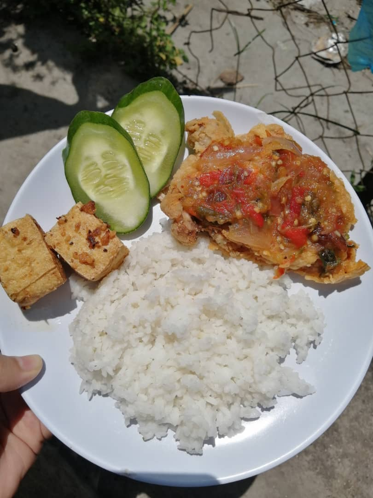

Here are my experiences during MCO and luckily now I'm at Home with my family!
Best Experience!
Assalamualaikum. As you know, during the MCO, there is a lot of plenty time that we can spend with our family by doing some beneficial activities and also having time for us to increase our worship and do the things that we may not have the opportunity to do it before. However, I am really sure that sometimes some of the people has wasted their time with a long sleep, always watching television, playing games and truly I said that at early two weeks of MCO, sometimes I am also being doing that behaviors but now most of the time I spent by doing assignments and study.
Alright, let's me share some of the experiences or activities that I have done during MCO. As I am the oldest child in the family, so lots of time I have spent by helping my mom cleaning the house every morning, sometimes cooks for lunch and dinner, helps my little brothers and sister in guiding them doing their homework, and so on. Actually,for me most of the activities that I have done during the MCO are no much different from my daily activities at home, just the only difference is that I can be at home with my family and spend time with them over a long period of time. Because as a degree student, it become a need or duty to return or to be in campus during the study session in a few months. So I think this is the right time that I need to appreciate by spending the leisure times with my family in order to strengthen our family bonds and create some fond memories.
In fact, most of the free time, my siblings and I will watch the movies together, cooked any new recipes that getting viral nowadays, plays games and others. So, since some of the popular foods, drinks and desserts are going trending nowadays, my mom, little sisters and I also didn't miss our chance in trying to make it.
Below are some kinds of our Homemade trending's foods, drinks and desserts that we made together. for those recipes.
FOODS:
Nasi Arab
Nasi Lemak
Nasi Ayam Penyet
Nasi Ayam Hainan Thailand
Curry Puff
Popia Nestum
Simpul Kasih
Popia Goreng
Rempeyek

DRINKS:
Dalgona Coffee
Cha Bang Ang
DESSERTS:
Puding Caremel
Cake Batik Marie
Chocolate Chip Biskut
Chocolate Cake
Bad Experience!
Besides of having some fun and exciting activities with my family, at the same time I've also been through some of bad experiences or things such as:
Miss ASM401 Online Class on 15 April 2020.
Forget to bring home my HRM textbook.
Busy with lots of assignments and at the same time need to guide my two little brothers and younger sister with their school' works.
Faced some difficulties to manage time properly and catch up certain topic in LAW 416 and ASM452.
and others..
An Unforgettable Experience!
Went to Clinic
Guess What, am I in a good and healthy condition?
Not so for 7 days from the first day of MCO!
Actually, when I got home from UiTM by bus, the next day which is the first day of MCO, I caught a cold and it lasted for several days. At that time, I believe that I am not feverish or in serious condition because I didn't have any severe symptoms or Covid-19 symptoms. But since it was causing anxiety for my family and myself also, I decided to go to a nearby clinic for having a check up and taking medicine on the sixth day after returning from college. At first, since that the government ordered only one person could go out during the MCO, I was really scared and worried about leaving the house as the Covid-19 outbreak besides my area was also the most affected area at that time but was not in the red zone yet.
Thankfully, when I arrived at the clinic, the situation at that time were not crowded with many people and the distance of 1 meter between individuals was prioritized. Some nurses who are assigned to work outside the clinic wear face masks and plastic covers on the outside of their clothes. I was amazed to see them follow all the procedures set out in order to keep them safe from being infected.
Anyone is not allowed to enter the clinic before their body temperature is checked and required to sanitize their hands before entering the clinic. Although my symptoms are not severe and just caught a cold, I still need to be checked in a special room due of fear or worried that I may have been effected with the disease. In addition, I respect the doctor who was in charge of examining me at the time by wearing a full Personal protective equipment or a PPE suit to keep him and the other staff safe from infection.
And the result...
After being examined by the doctor, he said that I just had a cold.
Thank God. I am really grateful.
Now I'm fine and was in a healthy condition.
So everyone please take good care of yourself and stay safe! Click Here to get more infomation or Live Updates about Covid-19.
 Assalamualaikum. As you know, during the MCO, there is a lot of plenty time that we can spend with our family by doing some beneficial activities and also having time for us to increase our worship and do the things that we may not have the opportunity to do it before. However, I am really sure that sometimes some of the people has wasted their time with a long sleep, always watching television, playing games and truly I said that at early two weeks of MCO, sometimes I am also being doing that behaviors but now most of the time I spent by doing assignments and study.
Assalamualaikum. As you know, during the MCO, there is a lot of plenty time that we can spend with our family by doing some beneficial activities and also having time for us to increase our worship and do the things that we may not have the opportunity to do it before. However, I am really sure that sometimes some of the people has wasted their time with a long sleep, always watching television, playing games and truly I said that at early two weeks of MCO, sometimes I am also being doing that behaviors but now most of the time I spent by doing assignments and study.